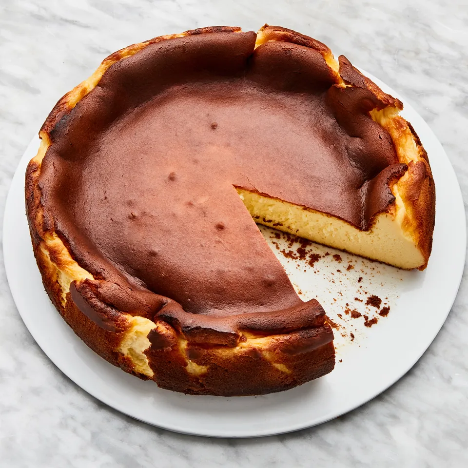

Burnt Basque Cheesecake
Basque cheesecake, also known as cheesecake San Sebastian or burnt Basque cheesecake, is a crustless cheesecake originating from the Basque Country, Spain. It has a caramelized, nearly burnt exterior and creamy, custard-like interior, achieved by baking at high temperatures.
Ingredients
- Unsalted butter (for pan)
- 2 lb. cream cheese, room temperature
- 1½ cups (300 g) sugar
- 6 large eggs
- 2 cups heavy cream
- 1 tsp. Diamond Crystal or ½ tsp. Morton kosher salt
- 1 tsp. vanilla extract
- ⅓ cup (42 g) all-purpose flour
Prep/Equipment
- Prep Time: 20 minutes
- Cook Time: 1 hour
- Total Time: 1 hour 20 minutes
- Servings: 10-12
- Equipment: 10" springform pan, parchment paper, stand mixer
Notes
Basque cheesecake can be made 1 day ahead. Cover and chill. Let cheesecake sit at room temperature for several hours to remove chill before serving.
Dietary Considerations: Vegetarian, Gluten-Free (with gluten-free flour)
Instructions
- Prepare the pan: Place a rack in middle of oven; preheat to 400°. Brush pan with unsalted butter, then line with 2 overlapping 16x12" sheets of parchment paper, making sure parchment comes at least 2" above top of pan on all sides. Place pan on a rimmed baking sheet.
- Mix cream cheese: Beat cream cheese and sugar in the bowl of a stand mixer fitted with the paddle attachment on medium-low speed, scraping down sides of the bowl, until very smooth, no lumps remain, and sugar has dissolved, about 2 minutes.
- Add eggs: Increase speed to medium and add eggs, one at a time, beating until each egg is incorporated, about 15 seconds, before adding the next. Scrape down sides of bowl, then reduce mixer speed to medium-low.
- Add cream and seasonings: Add heavy cream, salt, and vanilla extract and beat until combined, about 30 seconds.
- Add flour: Turn off mixer and sift flour evenly over cream cheese mixture using a fine-mesh sieve. Beat on low speed until incorporated, about 15 seconds. Continue to beat until batter is very smooth, homogenous, and silky, about 10 seconds.
- Bake: Pour batter into prepared pan. Bake cheesecake until deeply golden brown on top and still very jiggly in the center, 60–65 minutes.
- Cool and serve: Let cool slightly (cake will collapse as it cools), then unmold. Let cool completely. Carefully peel away parchment from sides of cheesecake. Slice into wedges and serve at room temperature.
